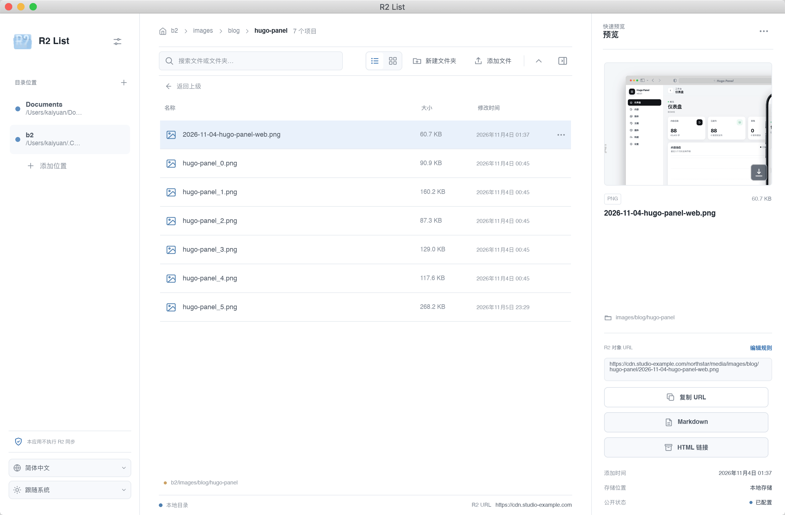

文件工作区
浏览、搜索本地目录，新建文件夹或导入文件；重名文件自动改名，不覆盖原文件；双击即可打开文件夹或预览。
R2 List 是一款轻量的原生桌面文件工作区，支持本地目录与 WebDAV 位置。根据相对路径生成 Cloudflare R2 对象 URL，直接预览文件，并复制为 URL、Markdown 或 HTML 链接。

浏览、搜索本地目录，新建文件夹或导入文件；重名文件自动改名，不覆盖原文件；双击即可打开文件夹或预览。
连接 WebDAV 服务器，像本地目录一样浏览远程文件，并生成同样的 R2 链接。
根据相对路径生成 R2 对象 URL，复制为纯链接、Markdown 或 HTML，并支持自定义 URL 规则。
无需离开应用即可预览图片（PNG、JPEG、GIF、WebP、AVIF、SVG、TIFF）、视频、PDF、Markdown 和文本。
浅色/深色主题可跟随系统，界面支持六种语言切换。
使用 Rust 和 Slint 构建，支持 Windows、macOS 和 Linux（x64 与 ARM64）。
免安装压缩包，解压即用。
r2-list-windows-x64.zip
macOS Apple Silicon
r2-list-macos-arm64.zip
macOS Intel
r2-list-macos-x64.zip
Linux x64
r2-list-linux-x64.zip
Linux ARM64
r2-list-linux-arm64.zip
Windows 10 及以上；macOS 11 及以上（Intel 版支持 10.15+），未签名版本首次启动需右键「打开」；Linux 需 Ubuntu 24.04+ / glibc 2.39+ 及桌面图形库。
查看平台要求与构建说明 →